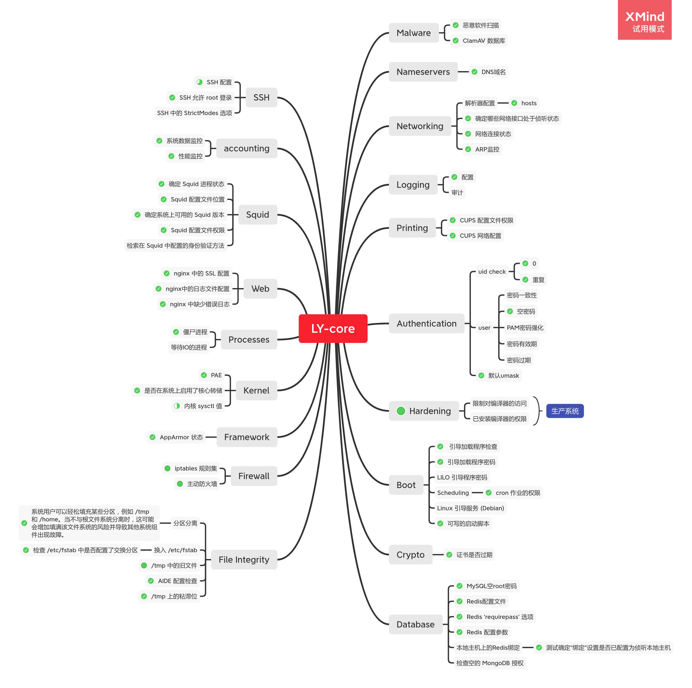

Ly-core详细设计
[toc]
Ly-core文档
核心功能

功能实现概述
在做安全检测时，大部分工作用于对配置文件的解析，在核心功能模块中，主要定义了两个静态函数去做配置文件的解析：
- KMPsearch
bool Utils::KMPsearch(const string &text,const string &pattern){
int tLen = text.size();
int pLen = pattern.size();
int i = 0;
int j = 0;
while (i < tLen && j < pLen){
if (text[i] == pattern[j]){
i++;
j++;
}else{
i = i - j + 1;
j = 0;
}
}
if (j == pLen)
return true;
else
return false;
}
- executeCMD
void Utils::executeCMD(const char *cmd,char *res){
char buf_ps[10000];
char ps[10000]={0};
FILE *ptr;
strcpy(ps, cmd);
if((ptr=popen(ps, "r"))!=NULL){
while(fgets(buf_ps, 10000, ptr)!=NULL){
strcat(res, buf_ps);
if(strlen(res)>10000)
break;
}
pclose(ptr);
ptr = NULL;
}
else{
spdlog::critical("popen {} error",ps);
}
}
功能实现详细
Accounting
- 数据结构
struct utsname sysuname;
struct sysinfo info;
- 关键函数
uname - print system information
sysinfo - return system information
Auth
- 函数
- CheckIsOnlyUser
- CheckNoPwUser
- 通过解析/etc/passwd文件实现
- CheckUmask
- 调用
umask函数实现
- 调用
Boot
- 函数
- CheckGrubBootLoader
- 校验/boot/grub/grub.cfg是否是grub-mkconfig模板(MD5)
- CheckAuthBoot
- 解析/boot/grub/grub.cfg文件
- CheckCron
- 解析/etc/crontab文件
- CheckGrubBootLoader
Crypto
函数
CheckCerts
读取/etc/ssl/certs目录所有文件，针对所有文件执行命令：
string cmd = "openssl x509 -in /etc/ssl/certs/" + string(ptr->d_name)+" -noout -enddate | awk '{print $4}'";
Database
函数
CheckNullPass
- 空密码登录
CheckDangerousCMD
- 解析/etc/redis/redis.conf配置，高危配置：
rename-command FLUSHALL rename-command CONFIG rename-command EVALCheckRedisPass
- 解析/etc/redis/redis.conf是否配置了
requirepass属性
- 解析/etc/redis/redis.conf是否配置了
CheckIntranetAccess
- 解析/etc/redis/redis.conf是否配置了
bind 127.0.0.1
- 解析/etc/redis/redis.conf是否配置了
FileIntegrity
函数：
CheckNecessaryBlock
- 执行命令：
df -h /home df -h /tmpCheckSwap
- 解析/etc/fstab是否配置了
/swapfile属性
- 解析/etc/fstab是否配置了
CheckTmp
- 执行命令：
find /tmp -type fCheckAIDE
- 解析/etc/aide/aide.conf是否配置
TmpStickybit
- 执行命令：
ls -l -d /tmp | awk '{print $1}'再校验输出
Firewall
函数
GetIptabelse
- 执行命令获取规则
sudo iptables -L
Framework
函数
apparmor_status
- 执行命令获取apparmor状态
sudo apparmor_status
Hardening
函数
- CheckGCC
- 执行命令获取版本以及权限信息
gcc --version | grep \"gcc\" | awk '{print $4}' ls -la /bin/gcc | awk '{print $1}'- CheckGPP
- 执行命令获取版本以及权限信息
g++ --version | grep \"g++\" | awk '{print $4}' ls -la /bin/g++ | awk '{print $1}'- CheckCMAKE
- 执行命令获取版本以及权限信息
cmake --version | head -n 1 | awk '{print $3}' ls -la /bin/cmake | awk '{print $1}'- CheckGCC
Kernel
函数
- CheckPAE
- 解析/proc/cpuinfo
pae信息
- 解析/proc/cpuinfo
- CheckCoreDumpOK
- 执行命令检测
ulimit -c- CheckPAE
Logging
函数
AuditConfiguration
- 解析/etc/rsyslog.conf配置
#input(type=\"imudp\" port=\"514\") #input(type=\"imtcp\" port=\"514\")
Malware
函数
- UpdateDataBase
- 执行命令
sudo freshclam- FullScan
- 执行命令
systemctl start clamav-freshclam clamscan -r -i --max-scansize=4000M --max-filesize=4000M /- BinScan
- 执行命令
systemctl start clamav-freshclam clamscan -r -i --max-scansize=4000M --max-filesize=4000M /bin/- UpdateDataBase
Nameservers
- 函数
- CheckDNS
- 解析/etc/resolv.conf是否匹配
nameserver 127.0.0.53
- 解析/etc/resolv.conf是否匹配
- CheckDNS
NetWorking
函数
- HostsParsing
- 解析/etc/hosts
- NicStatus
- 执行命令
ifconfig- ss
- 执行命令
ss -tan state syn-sent ss -tan state syn-recv ss -tan state listening ss -tan state established ss -tan state fin-wait-1 ss -tan state close-wait ss -tan state fin-wait-2 ss -tan state time-wait ss -tan state last-ack ss -tan state closing- arp
- 执行命令
arp -vn- HostsParsing
Printing
函数
- CheckCUPSPermissions
- 执行命后校验权限
ls -la /sbin/cupsfilter | awk '{print $1}'- CheckCUPSRemoteAccess
- 解析配置文件/etc/cups/cupsd.conf是否匹配
Listen localhost:631和WebInterface No
- 解析配置文件/etc/cups/cupsd.conf是否匹配
- CheckCUPSPermissions
Processes
函数
- RetrievingZombieProcesses
- 执行命令
ps -A -ostat,ppid,pid,cmd | grep -e '^[Zz]' | awk '{print $2}'- RetrievingZombieProcesses
Squid
函数
- CheckSquidStatus
- 执行命令
sudo systemctl status squid | grep -E \"Active\" sudo systemctl status squid | grep -E \"PID\" squid --version | grep Version | awk '{print $4}' ls -la /etc/squid/squid.conf | awk '{print$1}'- CheckSquidStatus
SSH
函数
- AuditSSHConfig
- 执行命令校验权限以及解析/etc/ssh/ssh_config配置
PasswordAuthentication
- 执行命令校验权限以及解析/etc/ssh/ssh_config配置
ls -la /etc/ssh/ssh_config | awk '{print $1}'- AuditSSHConfig
Web
- 函数
- CheckNginxSSL
- 解析/etc/nginx/nginx.conf是否配置
443 ssl
- 解析/etc/nginx/nginx.conf是否配置
- CheckNginxLog
- 解析/etc/nginx/nginx.conf是否配置
access_log&error_log
- 解析/etc/nginx/nginx.conf是否配置
- CheckNginxSSL